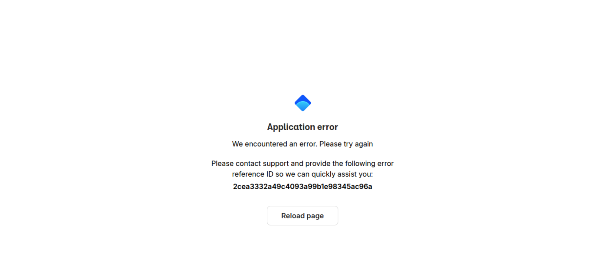

Tested 2026-11-02 18:54:45 using Chrome 151.0.7922.75 .(runtime settings)

Choose HAR:
The red band on the timeline marks when the main thread was busy with long tasks: moments when the page could not paint or respond, however the video looks.
Download videoShowing all filmstrips. Set --filmstrip.showAll to false to only show the ones that contain a change.
Click a frame to seek the video to that moment. The dot marks frames where the page changed visually.
The whole recording in one image: every pixel is tinted by how often it changed. Amber changed once, deep red changed ten or more times. The scale is fixed, so heatmaps from different runs compare directly.
Flat amber is a page that painted once and stayed put. Red speckle in the shape of the text means the same pixels repainted over and over, usually invisible rendering noise that inflates Last Visual Change and Speed Index. A solid red block is a genuinely restless area, like an ad or a carousel.
Rendering was not meaningfully delayed. First paint landed at 604 ms on a 373 ms first byte; the 1 render-blocking request was done by 512 ms. The largest paint followed at 1.168 s.
Want to see how much CSS style-recalculation work delayed FCP and LCP, plus CPU long tasks? Run with --cpu.
Blocking requests delay both paints: the browser renders nothing until they arrive, so they push First Contentful Paint and everything after it, including the largest paint (LCP). Requests that block the parser inside the body stall everything after them in the document. Load JavaScript with defer or async, and keep non-critical CSS off the critical path with media attributes. Bars show when each request loaded on a clock that runs to the last paint (the dashed line is FCP, the clock ends at LCP); the gap after the bars is style and layout work.
| Request | When it loaded | Transfer | Download |
|---|---|---|---|
document | 455 ms | 5.7 KB | 454 ms |
140fa72d520ec561.cssblocking | 53 ms | 890 B | 53 ms |
layout-594763ee7c75112e.jspotentially blocking | 607 ms | 508 B | 607 ms |
8612-4855131d30b3ac61.jspotentially blocking | 592 ms | 41.1 KB | 592 ms |
6353-5d99b43b316ad29f.jspotentially blocking | 522 ms | 12.4 KB | 522 ms |
page-eb6d95d9551d99a2.jspotentially blocking | 502 ms | 38.5 KB | 502 ms |
7217-561be6ec1cc8ecf6.jspotentially blocking | 437 ms | 36.9 KB | 437 ms |
4387-bc3d20bda1abb87e.jspotentially blocking | 375 ms | 4.0 KB | 375 ms |
d648eb28-f0532b78d0850c72.jspotentially blocking | 367 ms | 30.2 KB | 367 ms |
| 3 more requests | all done by 786 ms | 158.5 KB | |
0292 ms876 msFCP 604 msLCP 1.168 s |
The coach helps you find performance problems on your web page using web performance best practice rules. And gives you advice on privacy and best practices. Tested using Coach-core version 9.2.1.
decodingAsyncThe page has 1 image (out of 1) without a decoding hint. Add decoding="async" to non-critical images so the browser can decode them off the main thread.
Setting decoding="async" on an <img> tells the browser it can decode the image off the main thread, which keeps the page responsive to user interactions while images are being processed. The default ("auto") leaves the choice to the browser. https://developer.mozilla.org/en-US/docs/Web/HTML/Element/img#decoding
javascriptSizeThe total JavaScript transfer size is 329.1 kB and the uncompressed size is 1 MB. This is totally crazy! There is really room for improvement here.
A lot of JavaScript often means you are downloading more than you need. How complex is the page and what can the user do on the page? Do you use multiple JavaScript frameworks?
longTasksThe page has 3 CPU long tasks with the total of 187 ms. The total blocking time is 26 ms and 1 long task before first contentful paint with total time of 61 ms. However the CPU Long Task is depending on the computer/phones actual CPU speed, so you should measure this on the same type of the device that your user is using. Use Geckoprofiler for Firefox or Chromes tracelog to debug your long tasks.
Long CPU tasks locks the thread. To the user this is commonly visible as a "locked up" page where the browser is unable to respond to user input; this is a major source of bad user experience on the web today. However the CPU Long Task is depending on the computer/phones actual CPU speed, so you should measure this on the same type of the device that your user is using. To debug you should use the Chrome timeline log and drag/drop it into devtools or use Firefox Geckoprofiler.
cacheHeadersThe page has 1 request that are missing a cache time. Configure a cache time so the browser doesn't need to download them every time. It will save NaN undefined the next access.
The easiest way to make your page fast is to avoid doing requests to the server. Setting a cache header on your server response will tell the browser that it doesn't need to download the asset again during the configured cache time! Always try to set a cache time if the content doesn't change for every request.
responseOkThe page has 1 error response. The page has 1 response with code 404.
Your page should never request assets that return a 400 or 500 error. These requests are never cached. If that happens something is broken. Please fix it.
metaDescriptionThe page is missing a meta description.
Use a page description to make the page more relevant to search engines.
pageTitleThe page is missing a title.
Use a title to make the page more relevant to search engines.
viewportThe page is missing a viewport meta tag. Add <meta name="viewport" content="width=device-width, initial-scale=1"> so the browser lays the page out at the device width.
The viewport meta tag tells the browser how to lay out the page on small screens. Without it (or without width=device-width) the page is rendered at a desktop fallback width and scaled down, which makes text unreadable on mobile. Disabling zoom (user-scalable=no, maximum-scale<=1) is also an accessibility regression. https://developer.mozilla.org/en-US/docs/Web/HTML/Viewport_meta_tag
cumulativeLayoutShiftYou have a cumulative layout shift score (0.1407) that needs improvements. It is in the Google Web Vitals needs improvement range, shift higher than 0.1. You should manually check the filmstrip or video and check if it will affect the user.
Cumulative Layout Shift measures the sum total of all individual layout shift scores for unexpected layout shift that occur. The metric is measuring visual stability by quantify how often users experience unexpected layout shifts. It is one of Google Web Vitals.
unnecessaryHeadersThere are 1 response that sets a server header.
Do not send headers that you don't need. We look for p3p, cache-control and max-age, pragma, server and x-frame-options headers. Have a look at Andrew Betts - Headers for Hackers talk as a guide https://www.youtube.com/watch?v=k92ZbrY815c or read https://www.fastly.com/blog/headers-we-dont-want.
referrerPolicyNo <meta name="referrer"> tag was found on the page. Set a Referrer-Policy response header (preferred) or add a meta tag, for example <meta name="referrer" content="strict-origin-when-cross-origin">.
Without an explicit referrer policy the browser falls back to the user-agent default and may leak the full URL of the previous page (including query strings) to every cross-origin request. Set a Referrer-Policy response header (preferred) or a <meta name="referrer"> tag in the document. https://developer.mozilla.org/en-US/docs/Web/HTTP/Headers/Referrer-Policy
contentSecurityPolicyHeaderSet a Content-Security-Policy header to mitigate cross-site scripting attacks. You can start with a Content-Security-Policy-Report-Only header, which only reports violations rather than blocking them.
A Content-Security-Policy response header tells the browser which sources of script, style, and other content are allowed. The most effective form is a strict CSP using nonces or hashes together with strict-dynamic; the worst is a missing header, with unsafe-inline and unsafe-eval close behind. https://web.dev/articles/strict-csp
crossOriginEmbedderPolicyHeaderSet a Cross-Origin-Embedder-Policy header (typically require-corp or credentialless) on the document response to control cross-origin embedding.
Cross-Origin-Embedder-Policy (COEP) makes the page refuse to load cross-origin subresources unless they explicitly opt in via CORP or CORS. Together with Cross-Origin-Opener-Policy it puts the page in a cross-origin isolated context, which mitigates cross-window side-channel attacks (Spectre) and unlocks high-resolution timers and SharedArrayBuffer. https://developer.mozilla.org/en-US/docs/Web/HTTP/Headers/Cross-Origin-Embedder-Policy
crossOriginOpenerPolicyHeaderSet a Cross-Origin-Opener-Policy header (typically same-origin) on the document response to isolate the page from cross-origin windows.
Cross-Origin-Opener-Policy (COOP) lets a page sever its window-group ties to cross-origin documents that opened it or that it opens. Together with Cross-Origin-Embedder-Policy it puts the page in a cross-origin isolated context, which mitigates cross-window side-channel attacks (Spectre) and unlocks high-resolution timers and SharedArrayBuffer. https://developer.mozilla.org/en-US/docs/Web/HTTP/Headers/Cross-Origin-Opener-Policy
crossOriginResourcePolicyHeaderSet a Cross-Origin-Resource-Policy header (same-origin, same-site or cross-origin) on the document response to limit who may embed it.
Cross-Origin-Resource-Policy (CORP) is a per-response opt-in that tells the browser which origins are allowed to embed the resource. It blocks cross-origin or cross-site no-cors embedding (img, script, iframe, etc.) and is one of the building blocks of cross-origin isolation. https://developer.mozilla.org/en-US/docs/Web/HTTP/Headers/Cross-Origin-Resource-Policy
nelHeaderSet a NEL header (paired with Reporting-Endpoints) to collect connection-level error reports from the field.
The NEL (Network Error Logging) response header tells the browser to record connection-level failures (DNS, TLS, HTTP errors) and ship them to a reporting endpoint. NEL pairs with the Reporting-Endpoints / Report-To header — the page declares the endpoint group and NEL points at it. Together they give you visibility into errors that never reach your origin server. https://developer.mozilla.org/en-US/docs/Web/HTTP/Headers/NEL
permissionsPolicyHeaderSet a Permissions-Policy header to control which browser features the page can use.
The Permissions-Policy response header (the successor to Feature-Policy) lets a site explicitly opt in or out of powerful browser features such as camera, microphone, geolocation, payment and clipboard. Setting a strict policy reduces the attack surface and limits what embedded third parties can do. https://developer.mozilla.org/en-US/docs/Web/HTTP/Headers/Permissions-Policy
reportingEndpointsHeaderSet a Reporting-Endpoints header (or the legacy Report-To header) so CSP reports, NEL data and other Reporting-API events have an endpoint to land at.
The Reporting-Endpoints response header (the successor to Report-To) names the URLs that browsers should POST reports to. Without it, CSP report-to directives, Cross-Origin-Opener-Policy reports, NEL data and other Reporting-API events have nowhere to go. The legacy Report-To header is still accepted for older Chromium versions. https://developer.mozilla.org/en-US/docs/Web/HTTP/Headers/Reporting-Endpoints
strictTransportSecurityHeaderA strict transport header is set but miss out on setting includeSubDomains
The HTTP Strict-Transport-Security response header (often abbreviated as HSTS) lets a web site tell browsers that it should only be accessed using HTTPS, instead of using HTTP. https://developer.mozilla.org/en-US/docs/Web/HTTP/Headers/Strict-Transport-Security.
thirdPartyPrivacyThe page has 8% requests that are 3rd party (1 requests with a size of 20 B). The page do 1 utility request and uses 1 utility tool.
Using third party requests shares user information with that third party. Please avoid that! The project https://github.com/patrickhulce/third-party-web is used to categorize first/third party requests.
A snapshot of what the browser actually built for this page: the document, how big and deep the DOM tree is and what it kept in storage. Big, deep trees are slower to style and lay out, so the counts Chrome warns about carry a flag.
Document
What the page says it is and how large it rendered.
DOM structure
How much markup the browser has to build, style and lay out.
What the page stored on the client, and the network it was tested on.
Data collected using
Coach-core version 9.2.1. With updated code from
Webappanalyzer 2026-05-04. Use
--browsertime.firefox.includeResponseBodies html or
--browsertime.chrome.includeResponseBodies html to help Wappalyzer find more information about technologies used.
When the page main content is rendered, collected via the Largest Contentful Paint API. Read more about Largest Contentful Paint.
body > div > div > p:eq(1)How much the page's content shifts as it loads, collected via the Cumulative Layout Shift API.
One shift is 100% of your 0.141 CLS. body moved at 1.148 s. Reserve space for whatever renders into that spot, a fixed height or an aspect-ratio box, so later content stops pushing the page around.
Worst first, showing shifts of 0.01 and up. Each percentage is that shift's exact share of the score.
bodyThere are no custom configured scripts.
There are no custom extra metrics from scripting.
How the page is built.
https://measurement.cint.com/studies/9904b3d2-9fac-4cca-bdc0-ac870efb6292
| Header | Value |
|---|---|
cache-control | private, no-cache, no-store, max-age=0, must-revalidate |
content-encoding | gzip |
content-type | text/html; charset=utf-8 |
date | Mon, 02 Nov 2026 18:54:46 GMT |
link | </_next/static/media/739c2d8941231bb4-s.p.woff2>; rel=preload; as="font"; crossorigin=""; type="font/woff2", </_next/static/media/e4af272ccee01ff0-s.p.woff2>; rel=preload; as="font"; crossorigin=""; type="font/woff2" |
referrer-policy | strict-origin-when-cross-origin |
strict-transport-security | max-age=31536000 |
vary | Accept-Encoding |
via | 1.1 327f096e9672227dba0db315044c3d8c.cloudfront.net (CloudFront) |
x-amz-cf-id | kHjBMMjn7iwlPPqtzE8jfvvxBvldcGovLOI_wPw1-L0g2N3gZ5dK9Q== |
x-amz-cf-pop | PHX50-P2 |
x-cache | Miss from cloudfront |
x-content-type-options | nosniff |
x-frame-options | SAMEORIGIN |
x-powered-by | Next.js |
x-ratelimit-limit | 0 |
x-ratelimit-remaining | 0 |
x-ratelimit-reset | 0 |
x-tyk-trace-id | c330f14993cbd2b1b1dd43540f821afc |
x-xss-protection | 1; mode=block |
| URL | Type | Transfer Size | Content Size |
|---|---|---|---|
| https://measurement....772f523a0cdfb1.js | javascript | 100.8 KB | 273.6 KB |
| https://measurement....55131d30b3ac61.js | javascript | 41.1 KB | 138.6 KB |
| https://measurement....6d95d9551d99a2.js | javascript | 38.5 KB | 144.3 KB |
| https://measurement....1be6ec1cc8ecf6.js | javascript | 36.9 KB | 118.2 KB |
| https://measurement....9251086e3fc663.js | javascript | 32.3 KB | 100.8 KB |
| https://measurement....532b78d0850c72.js | javascript | 30.2 KB | 97.4 KB |
| https://measurement....e31819b9a7b2d0.js | javascript | 25.4 KB | 68.8 KB |
| https://measurement....99b43b316ad29f.js | javascript | 12.4 KB | 34.5 KB |
| https://measurement....bdc0-ac870efb6292 | html | 5.7 KB | 14.8 KB |
| https://measurement....3d20bda1abb87e.js | javascript | 4.0 KB | 7.7 KB |
| https://measurement....fa72d520ec561.css | css | 890 B | 1.7 KB |
| https://o45688.inges...9879424/envelope/ | json | 20 B | 2 B |
| https://measurement....4763ee7c75112e.js | plain | N/A | 0 b |
Transfer size328.0 KB
Content size1000.6 KB
Requests12
| Content | Header Size | Transfer Size | Content Size | Requests |
|---|---|---|---|---|
| html | 0 b | 5.7 KB | 14.8 KB | 1 |
| css | 0 b | 890 B | 1.7 KB | 1 |
| javascript | 0 b | 321.4 KB | 984.1 KB | 9 |
| json | 0 b | 20 B | 2 B | 1 |
| Total | 0 b | 328.0 KB | 1000.6 KB | 12 |
| Domain | Total download time | Transfer Size | Content Size | Requests |
|---|---|---|---|---|
| measurement.cint.com | 4.456 s | 328.0 KB | 1000.6 KB | 12 |
| o45688.ingest.us.sentry.io | 51 ms | 20 B | 2 B | 1 |
| type | min | median | max |
|---|---|---|---|
| Expires | 0 seconds | 1 year | 1 year |
| Last modified | 9 minutes | 3 days | 3 days |
The page logs the following messages to the console.
| Level | Message |
|---|---|
| SEVERE | https://measurement.cint.com/_next/static/chunks/app/layout-594763ee7c75112e.js - Failed to load resource: the server responded with a status of 404 () |
| SEVERE | https://measurement.cint.com/studies/9904b3d2-9fac-4cca-bdc0-ac870efb6292 - Refused to execute script from 'https://measurement.cint.com/_next/static/chunks/app/layout-594763ee7c75112e.js' because its MIME type ('text/plain') is not executable, and strict MIME type checking is enabled. |
| SEVERE | https://measurement.cint.com/_next/static/chunks/4928-b8af84b6719aa698.js 67:2164 ChunkLoadError: Loading chunk 7177 failed. (error: https://measurement.cint.com/_next/static/chunks/app/layout-594763ee7c75112e.js) at Object.j (https://measurement.cint.com/_next/static/chunks/webpack-adb7e790bc6bbf8c.js:1:3925) at https://measurement.cint.com/_next/static/chunks/webpack-adb7e790bc6bbf8c.js:1:1931 at Array.reduce (<anonymous>) at c.e (https://measurement.cint.com/_next/static/chunks/webpack-adb7e790bc6bbf8c.js:1:1912) at c (https://measurement.cint.com/_next/static/chunks/4928-b8af84b6719aa698.js:69:37471) at https://measurement.cint.com/_next/static/chunks/4928-b8af84b6719aa698.js:69:53523 at https://measurement.cint.com/_next/static/chunks/4928-b8af84b6719aa698.js:69:53735 at t (https://measurement.cint.com/_next/static/chunks/4928-b8af84b6719aa698.js:69:54786) |
Includes requests done after load event end.
| Content | Transfer Size | Requests |
|---|---|---|
| html | 0 b | 0 |
| css | 0 b | 0 |
| javascript | 0 b | 0 |
| image | 0 b | 0 |
| font | 0 b | 0 |
| favicon | 0 b | 0 |
| json | 20 B | 1 |
| Total | 20 B | 1 |
Includes requests done after DOM content loaded.
| Content | Transfer Size | Requests |
|---|---|---|
| html | 0 b | 0 |
| css | 0 b | 0 |
| javascript | 0 b | 0 |
| image | 0 b | 0 |
| font | 0 b | 0 |
| favicon | 0 b | 0 |
| json | 20 B | 1 |
| Total | 20 B | 1 |
Tasks ≥ 50 ms blocking the main thread, collected via the Long Task API.
A long animation frame (LOAF) is a frame that took ≥ 50 ms from input to the next paint. The part beyond the threshold is blocking time, the number that hurts Interaction to Next Paint and Total Blocking Time. Break long tasks up (scheduler.yield(), smaller chunks) or move the work off the main thread. Read more about the Long Animation Frames API.
| Script | Frames | Time running | Blocking (share by run time) | Forced style & layout | Triggered by |
|---|---|---|---|---|---|
| 8612-4855131d30b3ac61.js | 1 | 60 ms | 13.4 ms | – | script tag |
| be561fdd-5ae0675e04a32c18.js | 1 | 61.9 ms | 7.5 ms | – | script tag |
| 4928-b8af84b6719aa698.js | 2 | 45.5 ms | 6.5 ms | – | event handler, script tag |
| 4bd1b696-0ded9bbc66c5b6cb.js | 1 | 23.3 ms | 2.8 ms | – | script tag |
A frame's blocking time is split between its scripts by their share of the frame's work, capped at each script's own run time — blocking from work no script owns (HTML parsing, browser internals) stays unattributed. The per-script blocking view below uses the same attribution.
The browser did not report which script was responsible for this frame — typically its own style/layout work, or a cross-origin script it will not name.
1 more long frame carried no blocking time (nothing ran past the 50 ms threshold) — long, but harmless to INP and TBT.
How much each script blocked the main thread, derived from the Long Animation Frame API. Each frame's blocking time is split between its scripts by their share of the frame's work, capped at each script's own run time — blocking from work no script owns (HTML parsing, browser internals) is not attributed (older data credits the script that started the frame). The closest answer to "which script should I fix to improve TBT" the platform exposes.
Want to dig deeper? Download the Chrome trace and drag-and-drop it into Performance in DevTools.
Third party requests categorised by Third party web version 0.29.2.
Requests by category1
Transfer size328.0 KB
Content size1000.6 KB
Requests13
Calculated using .*cint.* (use --firstParty to configure).
| Content | Header Size | Transfer Size | Content Size | Requests |
|---|---|---|---|---|
| html | 0 b | 5.7 KB | 14.8 KB | 1 |
| css | 0 b | 890 B | 1.7 KB | 1 |
| javascript | 0 b | 321.4 KB | 984.1 KB | 9 |
| image | 0 b | 0 b | 0 b | 0 |
| font | 0 b | 0 b | 0 b | 0 |
| favicon | 0 b | 0 b | 0 b | 0 |
| Total | N/A | 328.0 KB | 1000.6 KB | 12 |
| Content | Header Size | Transfer Size | Content Size | Requests |
|---|---|---|---|---|
| html | 0 b | 0 b | 0 b | 0 |
| css | 0 b | 0 b | 0 b | 0 |
| javascript | 0 b | 0 b | 0 b | 0 |
| image | 0 b | 0 b | 0 b | 0 |
| font | 0 b | 0 b | 0 b | 0 |
| favicon | 0 b | 0 b | 0 b | 0 |
| json | 0 b | 20 B | 2 B | 1 |
| Total | N/A | 20 B | 2 B | 1 |
Axe is an accessibility testing engine for websites and other HTML-based user interfaces. Tested using axe-core version 4.11.4. Read more about axe-core.
4 accessibility rules failed, affecting 7 elements.
Start with the 1 serious issue.
document-titleEnsure each HTML document contains a non-empty <title> element
Read the axe-core docs for this rule →
Fix any of the following: Document does not have a non-empty <title> element
<html lang="en">landmark-one-mainEnsure the document has a main landmark
Read the axe-core docs for this rule →
Fix all of the following: Document does not have a main landmark
<html lang="en">page-has-heading-oneEnsure that the page, or at least one of its frames contains a level-one heading
Read the axe-core docs for this rule →
Fix all of the following: Page must have a level-one heading
<html lang="en">regionEnsure all page content is contained by landmarks
Read the axe-core docs for this rule →
Fix any of the following: Some page content is not contained by landmarks
<div class="flex items-center justify-center"><h6 class="ds-text-display ds-sem-text-h6-semibold ds-text-primary mt-5">Application error</h6><p class="ds-sem-text-body-base-normal mb-5 mt-3">We encountered an error. Please try again</p><p class="ds-sem-text-body-base-normal mb-5 mx-auto max-w-md">Please contact support and provide the following error reference ID so we can quickly assist you:<span class="mt-1 block select-all font-semibold" data-testid="error-reference-id">2cea3332a49c4093a99b1e98345ac96a</span></p>| Per domain | Dirtiest assets | Per content type |
Estimated using@tgwf/co2 v0.19.0 · model 1byte.
Using the internet means using electricity, and most of that electricity still comes from fossil fuels, so the more data we send, the more we burn.Building a sustainable web is the 9th W3C Ethical Web Principle. Much of what makes sites faster also makes them greener; see The Green Web Foundation.
Pass--sustainable.pageViews
to project total CO₂ emissions across an estimated traffic volume.
Hosting info fromThe Green Web Foundation's open dataset.